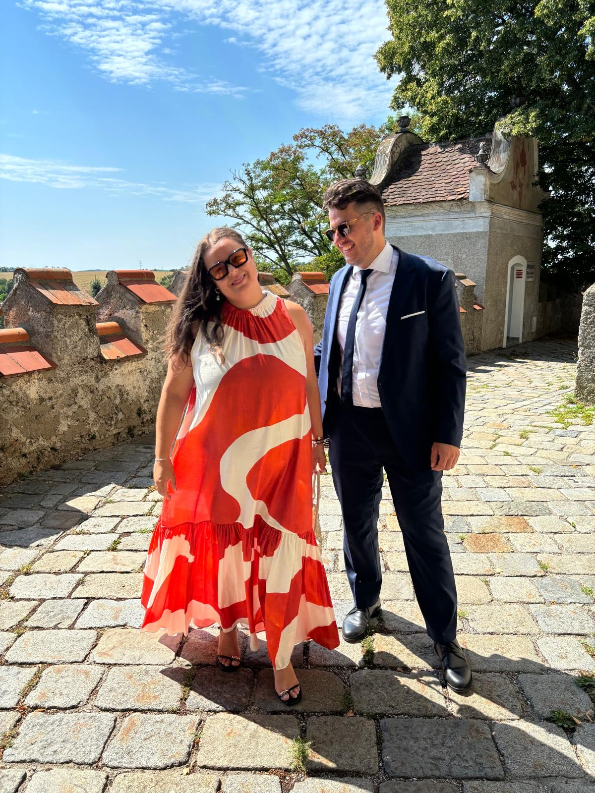

Wir freuen uns auf euch!


Wir laden euch herzlich ein, gemeinsam mit uns diesen besonderen Tag zu feiern!
Samstag, 22. August 2026
Wir stellen einen Bus bereit, der vom Garten zur Kirche (ca. 7 km) und zurück fährt.
Für alle, die mit dem Bus fahren möchten:
Treffpunkt im Garten der Familie Lubowski (Haydnstraße 5, 3350 Haag)
Gemeinsame Abfahrt um 14:20 Uhr
Kirche St. Wolfgang
Kanning
Garten der Familie Lubowski
Haydnstraße 5, 3350 Haag
Gemeinsames Abendessen im Garten
Tanz, Musik & Feier bis in die Nacht
Gartenparty – Zieht an, worin ihr euch wohlfühlt und bereit für eine Feier im Freien seid. Ob elegant, sommerlich oder entspannt – ihr entscheidet!
Im Garten gibt es einen Pool, der natürlich gerne benutzt werden darf, wenn es noch heiß ist. Packt also gerne eure Badesachen ein!
Bitte gebt bei der Anmeldung an, wenn ihr eine Übernachtungsmöglichkeit benötigt.
Wir melden uns dann mit einem Vorschlag bei euch.
Das schönste Geschenk ist eure Anwesenheit!
Über einen Beitrag zu unserer Hochzeitsreise würden wir uns sehr freuen.
Unsere Hochzeit findet bei jedem Wetter statt. Sollte es regnen, haben wir vorgesorgt: Wir stellen Zelte auf und verlegen Teile der Feier ins Haus, damit alle geschützt feiern können.
Kanning 1899, 4432 Ernsthofen
Haydnstraße 5, 3350 Haag, Niederösterreich
Anreise mit dem Zug – Aus dem Osten (via Amstetten): Die Zugverbindung nach Haag funktioniert sehr gut. Nach dem Umstieg in Amstetten bringt euch der Regionalzug direkt nach Haag – von dort sind es 6 Minuten zu Fuß bis in die Haydnstraße. Auch die Rückreise ist problemlos möglich.
Anreise mit dem Zug – Aus dem Westen (via St. Valentin): Bis St. Valentin kommt ihr bequem mit dem Zug. Leider wartet ihr dort knapp 40 Minuten auf den Anschlusszug nach Haag. Wenn das für euch zutrifft, schreibt uns gerne vorab – wir organisieren dann ein Taxi von St. Valentin direkt nach Haag oder zur Kirche. Für die Heimreise können wir ebenso ein Taxi nach St. Valentin arrangieren.
Bus zur Kirche: Wir stellen einen Bus bereit, der vom Garten zur Kirche und zurück fährt. Falls ihr mitfahren möchtet, gebt das bitte bei der Anmeldung an.
Bitte teilt uns bis zum 1. Juli 2026 mit, ob ihr dabei sein könnt.
Bitte tragt euch einzeln in die Anmeldeliste ein – jede Person füllt das Formular selbst aus. So können wir alle individuellen Wünsche (z.B. Bus zur Kirche, Taxi, Übernachtung) am besten berücksichtigen.
Fragen? Schreibt uns gerne eine E-Mail: anna.kirchmair@outlook.de oder w.lub92@gmail.com